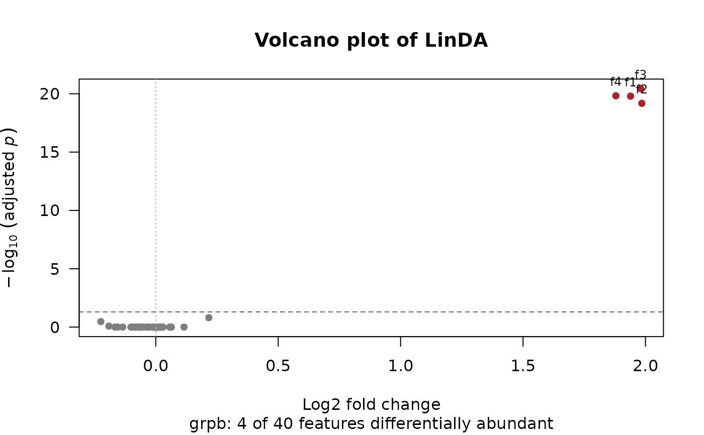

Tests each feature for differential abundance with LinDA (Zhou et al. 2022): an ordinary linear model of the feature's centred log2 ratios (clr, in log2), whose coefficients are then corrected for the bias that the composition puts on all of them, estimated as their mode across features. Fast, and robust to strong compositional effects.
Usage
linda(
counts,
formula = NULL,
data = NULL,
groups = NULL,
margin = 1L,
zero_handling = "adaptive",
pseudocount = NULL,
corr_cut = 0.1,
outlier_pct = 0.03,
standardize = TRUE,
alpha = 0.05,
p_adjust = "holm",
cpus = n_cpus()
)Arguments
- counts
A numeric matrix of non-negative abundances (samples \(\times\) features), or any of the objects listed under Input Types. Whole numbers are counts; anything else (such as the proportions of
replace_zeros()) is taken as proportions. See Zeros.- formula
The model, a one-sided formula over the columns of
data, such as~ status + age, or the same as a string. Anythingstats::model.matrix()accepts may be used. Every factor (and character or logical column) is coded with treatment contrasts, its first level (in sorted order, or a factor's own order) the reference. One random intercept may be added, as in lme4:~ status + age + (1 | subject), for samples grouped by a column ofdata(see Repeated measures).NULL(the default) is~ groups.- data
A data frame of sample metadata, with the variables of
groupsorformula. Its rows are matched to the samples ofcountsby name when both have names, else by position.- groups
The term of interest (a fixed effect): with
formula, the name of one of its terms (the oneplot()shows by default); alone, the name of a column ofdataor a vector with one value per sample, and the model is~ groups.- margin
The margin containing samples.
1if samples are rows,2if samples are columns. Ignored whencountsis a special object class (e.g.phyloseq). Default:1- zero_handling
How zeros of counts are replaced before taking logs:
'pseudocount'(addpseudocountto every value),'imputation'(a zero becomes the sample's total divided by the largest total among the samples where the feature is zero), or'adaptive'(the default): imputation if the samples' totals are associated with the design (see Zeros), else the pseudocount. Ignored for proportions.- pseudocount
For
zero_handling = 'pseudocount'(or'adaptive'choosing it): the value added to every count.NULL(the default) follows the shared rule: nothing is added when the (winsorized) table has no zeros, else half its smallest non-zero value (0.5 for counts), with a warning. LinDA adds 0.5 always.- corr_cut
For
zero_handling = 'adaptive': imputation is chosen when a design column's p-value for its association with the samples' log totals is at mostcorr_cut. Default0.1.- outlier_pct
The proportion of each feature's values that is expected to be outliers: values above its
1 - outlier_pctquantile are winsorized (brought down to it).0for none. Default0.03.- standardize
TRUE(the default, as LinDA) to centre and scale every numeric variable offormulato unit standard deviation before fitting, so that their coefficients are per standard deviation;FALSEfor coefficients per unit.- alpha
The significance level of the adjusted p-values:
rejectisp_adjusted <= alpha. Strictly between 0 and 1. Default:0.05.- p_adjust
How to adjust the p-values for testing every feature, separately for each covariate: any method of
stats::p.adjust()('holm', the default, as ecodive's other DA methods;'BH', as LinDA;'hochberg','hommel','bonferroni','BY','fdr','none').NaNp-values are left out of the family.- cpus
How many parallel processing threads should be used. The default,
n_cpus(), will use all logical CPU cores.
Value
A data frame of class c('ecodive_linda', 'data.frame') with a
row per feature and covariate (every design column but the intercept),
in the order of counts:
feature: the feature's name, or its index as text.covariate: the design column, asstats::model.matrix()names it ('statusmoderate','age').log2_fc: the bias-corrected coefficient, a log2 fold change in abundance (per standard deviation of a numeric covariate whenstandardize = TRUE).se: its standard error.t:log2_fc / se.dof: the degrees of freedom, the number of samples minus the rank of the design; with a random intercept, Satterthwaite's, per feature and covariate.p_value: \(2 F_t(-|t|)\).p_adjusted: adjusted withp_adjust, per covariate.reject:p_adjusted <= alpha(FALSEwhereNaN).
Coefficients that can't be estimated (an aliased design column) are
NaN. Attributes: method ('linda'), formula, groups (the term
of interest, or NULL), design (the model matrix, standardized),
standardize, zero_handling (what was done: 'pseudocount',
'imputation', or 'half_min' for proportions), pseudocount (the
value added; 0 when none was), outlier_pct, alpha, p_adjust,
log_base (2), bias (the estimated bias of each covariate's
coefficients: their mode, which was subtracted), vcov (a feature
\(\times\) design column \(\times\) design column array, each
feature's covariance matrix of the coefficients), and per feature
(named by feature): mean (the mean of its centred log2 values, its
mean clr abundance) and resid_sd (the residual standard deviation of
its fit). With a random intercept, also random (its grouping
variable) and per feature random_sd (the random intercepts' standard
deviation; vcov and resid_sd are then the mixed model's). plot()
draws volcano, effect, MA and forest plots of them
(plot.ecodive_linda()).
Details
The model. For each feature \(i\), the centred log2 ratios \(W_{is} = \log_2 Y_{is} - \frac{1}{m} \sum_j \log_2 Y_{js}\) of its (winsorized, zero-free) abundances \(Y\) are fitted to the design by least squares: \(W_i = X \tilde\beta_i + \varepsilon_i\). If the absolute abundances follow a linear model in \(X\), each \(\tilde\beta_{ik}\) is the feature's true log2 fold change plus one bias, the same for every feature, that comes from the composition (the clr's geometric mean moves with \(X\) too). When most features don't change, the coefficients cluster around that bias, so LinDA estimates it as the mode of \(\{\tilde\beta_{ik}\}_i\), and reports \(\hat\beta_{ik} = \tilde\beta_{ik} - \text{mode}_k\), with the standard error of the least squares fit and a t-test on \(n - \text{rank}(X)\) degrees of freedom. The correction assumes that most features are not differentially abundant (or that the changes are balanced); see Zhou et al. (2022) for its asymptotic justification.
The mode is that of a kernel density estimate: the mean shift
algorithm, with a Gaussian kernel and stats::bw.nrd0()'s bandwidth,
started at the shorth (the mean of the shortest half of the
coefficients), until a step is smaller than \(\sqrt{\epsilon}\) times
the estimate (at most 1000 steps). This is what MicrobiomeStat's
linda() does (it calls modeest's meanshift()).
Zeros. Counts (whole numbers) are first winsorized: each feature's
proportions (count / sample total) above their \(1 - \)outlier_pct
quantile are brought down to it and turned back into counts (rounded).
Then zeros are replaced by zero_handling. With 'adaptive', the log
totals of the winsorized samples are regressed on the design's columns
(lm(log(totals) ~ X)); if any column's t-test p-value is at most
corr_cut, sequencing depth is associated with the design and a
pseudocount would bias the fold changes, so zeros are imputed instead
(Zhou et al. 2022, Methods). Values that aren't whole numbers are taken
as proportions: they are winsorized as they are, and each feature's
zeros become half its smallest non-zero value (a feature with no
non-zero value is an error).
Differences from LinDA. The results are those of MicrobiomeStat
1.4's linda() (to about \(10^{-12}\)) with zero_handling and
pseudocount = 0.5 given, and p_adjust = 'BH', except that:
MicrobiomeStat 1.4 decides
'adaptive'as above, and reports its choice, but then adds the pseudocount whatever it chose;linda()does what it reports.LinDA always adds
pseudo.cnt = 0.5;linda()'spseudocount = NULLadds nothing to a table without zeros, and half the smallest non-zero value (0.5 for counts with ones) to one with zeros.LinDA's feature filters (
prev.filter,mean.abund.filter,max.abund.filter) are not carried over: filtercountsfirst, for examplecounts[, colMeans(counts > 0) >= 0.1]for a prevalence of 10\Whether
countsare counts or proportions is decided from the values (LinDA'sfeature.dat.type).p_adjustdefaults to'holm'(LinDA:'BH').Factor levels are sorted in the C locale (LinDA: in the session's).
Of LinDA's mixed models, one random intercept,
(1 | id); random slopes, several random terms and nested terms are not supported.Mixed models are fitted at the exact REML optimum, and their degrees of freedom from exact derivatives (see Repeated measures); lme4's optimizer stops a little short of the optimum, and lmerTest takes derivatives numerically, so these differ from LinDA's by about \(10^{-6}\) (\(10^{-4}\) in places where the likelihood is very flat).
The result is one data frame (LinDA: a list per covariate), without
baseMean(themeanattribute gives each feature's mean clr abundance instead).
Repeated measures. With (1 | id) in formula, each feature's
clr values get a linear mixed model, with a random intercept for each
value of id (a subject, say), fitted by restricted maximum likelihood
(REML) as lme4's lmer() does (Bates et al. 2015), and the same mode
correction (Zhou et al. 2022, Remark 1). Coefficients are tested with
Satterthwaite's degrees of freedom, as by lmerTest (Kuznetsova et al.
2017), from the variance parameters' REML covariance. The optimum is
found exactly (the root of the REML criterion's derivative in the ratio
of the two standard deviations, by Brent's method then bracketing), and
every derivative is analytic. A random intercept whose variance is
estimated as 0 (lme4's "boundary (singular) fit") gives the fixed-effects
fit, with \(n - p\) degrees of freedom. With zero_handling = 'adaptive', the samples' log totals get the same mixed model.
Computation. The table is read by feature from its sparse form,
winsorized and transformed per feature in parallel C, and every feature
is fitted to one QR decomposition of the design; the per-sample means of
the clr are summed in a fixed order, so results are identical for any
number of cpus.
Input Types
The counts parameter is designed to accept a simple numeric matrix, but
seamlessly supports objects from the following biological data packages:
phyloseqrbiomSummarizedExperimentTreeSummarizedExperiment
For large datasets, standard matrix operations may be slow. See
vignette('performance') for details on using optimized formats
(e.g. sparse matrices) and parallel processing.
References
Zhou, H., He, K., Chen, J., & Zhang, X. (2022). LinDA: linear models for differential abundance analysis of microbiome compositional data. Genome Biology, 23, 95. doi:10.1186/s13059-022-02655-5
Yang, L., & Chen, J. (2023). Benchmarking differential abundance analysis methods for correlated microbiome sequencing data. Briefings in Bioinformatics, 24, bbac607. doi:10.1093/bib/bbac607
Bates, D., Maechler, M., Bolker, B., & Walker, S. (2015). Fitting linear mixed-effects models using lme4. Journal of Statistical Software, 67(1), 1-48. doi:10.18637/jss.v067.i01
Kuznetsova, A., Brockhoff, P. B., & Christensen, R. H. B. (2017). lmerTest package: tests in linear mixed effects models. Journal of Statistical Software, 82(13), 1-26. doi:10.18637/jss.v082.i13
Fukunaga, K., & Hostetler, L. (1975). The estimation of the gradient of a density function, with applications in pattern recognition. IEEE Transactions on Information Theory, 21, 32-40. doi:10.1109/TIT.1975.1055330
Examples
# 30 samples, 40 features; f1 to f4 are more abundant in group b.
set.seed(1)
x <- matrix(rpois(30 * 40, 50), 30, 40)
colnames(x) <- paste0('f', 1:40)
meta <- data.frame(
grp = rep(c('a', 'b'), each = 15),
age = round(runif(30, 20, 60)) )
x[16:30, 1:4] <- x[16:30, 1:4] * 4
res <- linda(x, ~ grp + age, meta, groups = 'grp')
res
#> # A data.frame: 80 × 9
#> # LinDA
#> feature covariate log2_fc se t dof p_value p_adjusted reject
#> <chr> <chr> <dbl> <dbl> <dbl> <dbl> <dbl> <dbl> <lgl>
#> 1 f1 grpb 1.94 0.0656 29.6 27 4.23e-22 1.61e-20 TRUE
#> 2 f1 age 0.0128 0.0334 0.384 27 0.704 1 FALSE
#> 3 f2 grpb 1.99 0.071 28 27 1.79e-21 6.6e-20 TRUE
#> 4 f2 age 0.0374 0.0361 1.04 27 0.31 1 FALSE
#> 5 f3 grpb 1.98 0.0632 31.3 27 9.08e-23 3.63e-21 TRUE
#> 6 f3 age -0.00475 0.0321 -0.148 27 0.884 1 FALSE
#> 7 f4 grpb 1.88 0.0633 29.7 27 3.82e-22 1.49e-20 TRUE
#> 8 f4 age 0.0412 0.0322 1.28 27 0.212 1 FALSE
#> 9 f5 grpb -0.0872 0.0811 -1.08 27 0.292 1 FALSE
#> 10 f5 age 0.00793 0.0413 0.192 27 0.849 1 FALSE
#> # … 70 more rows
#> # Use print(x, n = ...) to see more rows
#> # Attributes: method, formula, groups, design, standardize, zero_handling,
#> # pseudocount, outlier_pct, alpha, p_adjust, log_base, bias, vcov, mean,
#> # resid_sd
plot(res)

# The same, as LinDA's defaults would give it.
linda(x, ~ grp + age, meta, zero_handling = 'pseudocount',
pseudocount = 0.5, p_adjust = 'BH')
#> # A data.frame: 80 × 9
#> # LinDA
#> feature covariate log2_fc se t dof p_value p_adjusted reject
#> <chr> <chr> <dbl> <dbl> <dbl> <dbl> <dbl> <dbl> <lgl>
#> 1 f1 grpb 1.93 0.0652 29.6 27 4.15e-22 5.53e-21 TRUE
#> 2 f1 age 0.0127 0.0332 0.382 27 0.706 0.992 FALSE
#> 3 f2 grpb 1.97 0.0706 28 27 1.77e-21 1.77e-20 TRUE
#> 4 f2 age 0.0372 0.0359 1.04 27 0.31 0.992 FALSE
#> 5 f3 grpb 1.97 0.0629 31.3 27 9.27e-23 3.71e-21 TRUE
#> 6 f3 age -0.00496 0.032 -0.155 27 0.878 0.992 FALSE
#> 7 f4 grpb 1.87 0.0629 29.7 27 3.66e-22 5.53e-21 TRUE
#> 8 f4 age 0.041 0.032 1.28 27 0.211 0.992 FALSE
#> 9 f5 grpb -0.0862 0.0804 -1.07 27 0.293 0.745 FALSE
#> 10 f5 age 0.00788 0.0409 0.193 27 0.849 0.992 FALSE
#> # … 70 more rows
#> # Use print(x, n = ...) to see more rows
#> # Attributes: method, formula, design, standardize, zero_handling,
#> # pseudocount, outlier_pct, alpha, p_adjust, log_base, bias, vcov, mean,
#> # resid_sd
# Two samples from each of 15 subjects: a random intercept per subject.
meta$subject <- rep(sprintf('s%02d', 1:15), 2)
linda(x, ~ grp + age + (1 | subject), meta, groups = 'grp')
#> # A data.frame: 80 × 9
#> # LinDA
#> feature covariate log2_fc se t dof p_value p_adjusted reject
#> <chr> <chr> <dbl> <dbl> <dbl> <dbl> <dbl> <dbl> <lgl>
#> 1 f1 grpb 1.94 0.0656 29.6 27 4.23e-22 1.65e-20 TRUE
#> 2 f1 age 0.0133 0.0334 0.399 27 0.693 1 FALSE
#> 3 f2 grpb 1.99 0.0517 38.5 13.5 3.44e-15 1.31e-13 TRUE
#> 4 f2 age 0.0202 0.0348 0.58 26.3 0.567 1 FALSE
#> 5 f3 grpb 1.98 0.0632 31.3 27 9.08e-23 3.63e-21 TRUE
#> 6 f3 age -0.00424 0.0321 -0.132 27 0.896 1 FALSE
#> 7 f4 grpb 1.88 0.0546 34.4 14 5.79e-15 2.14e-13 TRUE
#> 8 f4 age 0.0385 0.0326 1.18 26.7 0.248 1 FALSE
#> 9 f5 grpb -0.0872 0.0811 -1.07 27 0.292 1 FALSE
#> 10 f5 age 0.00844 0.0413 0.205 27 0.839 1 FALSE
#> # … 70 more rows
#> # Use print(x, n = ...) to see more rows
#> # Attributes: method, formula, groups, design, standardize, zero_handling,
#> # pseudocount, outlier_pct, alpha, p_adjust, log_base, bias, vcov, mean,
#> # resid_sd, random, random_sd